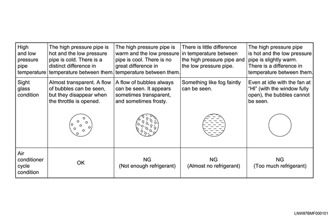

1. Fully close the vehicle doors and operate the air conditioner with the inside/outside air switch at RECIRC position, and then sets the highest value to the fan switch with the temperature adjustment at MAX COOL.
Note
2. Check the high and low pressure of the refrigerant with the manifold gauge.
Heating temperature： 30 to 35 ℃ { 86 to 95 °F }
Low pressure side： 127 to 245 kPa { 1.30 to 2.50 kgf/cm2 }
High pressure side： 1373 to 1667 kPa { 14 to 17 kgf/cm2 }
Note
Checking the air conditioning system using the manifold gauge
3. In addition to refrigerant pressures, check also whether the refrigerant is properly filled using the sight glass.
Check the sight glass under the following conditions.
Outside temperature is 35ºC {95˚F} or lower
Engine rpm is 1500 rpm
Air conditioner switch ON
Inside/outside air change is RECIRC
Fan switch is HIGH
Temperature adjustment is MAX COOL
Pressure at high pressure side is 1667 kPa {17 kgf/cm2} or lower
Note

4. Put your hand at the air outlet to check whether the temperature at which the air is blowing out corresponds with the temperature set.
5. After completing the system inspection, remove the charging hose from the service charge valve.